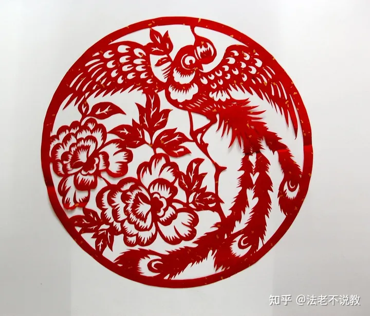

中国剪纸艺术
Chinese paper cuntting art
中国剪纸艺术
Chinese paper cuntting art
中国传统民间剪纸艺术是一种源远流长的民间艺术，它是中国传统文化的重要组成部分。 自古以来，剪纸艺术就在中国广泛流传，深受人们喜爱。这种艺术以其独特的审美价值和文化内涵，成为世界上独具特色的艺术形式之一 研究 本文将探究中国传统民间剪纸艺术的起源、发展和文化内涵，以及其在现代社会中的传承和创新，旨在加深人们对中国民间文化的认识，推广和发扬中国传统剪纸艺术的独特魅力。 中国传统民间剪纸艺术的历史和传承
剪纸的起源和历史： 剪纸是一种民间手工艺，指用剪刀将纸张剪成各种形状和图案的艺术，起源于中国古代。 据历史记载，剪纸的起源可以追溯到汉代。在古代，剪纸被用于庆祝节日、婚庆喜事、祭祀活动等，传统的剪纸作品多以民间故事、传说、风俗习惯等为主题，具有鲜明的地域文化特色
剪纸在中国传统文化中的地位和作用: 剪纸是一种民间艺术，是传承民间文化的一种形式，具有深厚的历史文化底蕴。 其次，剪纸作品常常被用于庆祝节日和祭祀活动中，成为了重要的文化符号和仪式表达。 此外，剪纸还被广泛运用于民间装饰和家居装饰领域，为传统文化的传承和发展作出了重要贡献。
中国传统剪纸艺术的传承和发展： 中国传统剪纸艺术的传承和发展是一个不断演变的过程。
在中国古代，剪纸艺术被广泛传承和发展，不同地区和民族都有各自独特的风格和形式。 在现代，随着科技的发展和时代的变迁，剪纸艺术也得到了新的发展和创新，例如数字剪纸、激光剪纸等新兴形式的出现。 同时，各地也开展了一系列的剪纸艺术比赛和展览，促进了剪纸艺术的传承和发展。 中国传统民间剪纸艺术的种类和特点 剪纸艺术是中国传统的民间艺术之一，经过几千年的发展和演变，形成了多种风格各异的剪纸艺术形式。
以下是中国传统民间剪纸艺术的种类和特点： 不同地区的剪纸艺术风格和特点： 中国的不同地区和民族都有自己独特的剪纸艺术风格。 例如，北方地区的剪纸艺术风格多以线条简洁、图案明快著称，南方地区的剪纸艺术则偏向于色彩鲜艳、细腻多变。 在西南地区，彝族、傣族等少数民族都有自己独特的剪纸艺术，以其线条流畅、造型简单、寓意深刻的特点而闻名。
剪纸艺术中的图案和主题： 剪纸艺术的图案和主题多样，常常以传统文化、自然风景、生活习俗等为题材。 例如，剪纸中常见的动物形象有鸟、鱼、虫等，寓意着平安和吉祥；而以花卉、树木、山水为主题的剪纸，则表现了自然风景和生命力。 此外，剪纸艺术还可以表现出生活中的日常场景和习俗，例如结婚、生育、祭祀等。
剪纸艺术的技巧和方法： 剪纸艺术的技巧和方法涉及到对纸张的处理和对剪刀等工具的掌握，以及对设计图案的把握和创新等方面。 对于纸张的处理，通常要选用质地较好的纸张，并注意保持纸张的整洁和光滑度。 对于剪刀等工具的掌握，需要注意力度和方向的掌握，以及要有一定的剪刀控制力，同时也要注意保持工具的锋利度和干净度。 对于设计图案的把握和创新，可以参考传统的剪纸图案和题材，同时也可以进行创新和组合。 在设计过程中，需要注意对比度、层次感和细节等方面，以及在剪裁过程中要注意避免剪破或剪断重要的部分。
剪纸艺术的表现手法和创新： 剪纸艺术的表现手法和创新主要包括对图案和题材的表现手法和对材料和工具的创新。 对于图案和题材的表现手法，可以采用简洁的线条和对比鲜明的色彩等方式，以及通过层次感和立体感来表现画面的深度和空间感。 同时也可以通过对传统题材的重新组合和表现来进行创新，以适应现代社会的需求和审美。
剪纸艺术的文化内涵和象征意义: 剪纸艺术是中国传统的民间艺术之一，具有深厚的文化内涵和象征意义。 它不仅是一种艺术创作，更是一种文化传承和表达，承载着丰富的历史、文化和精神内涵。
剪纸在中国民间文化中的意义和作用： 在中国民间文化中，剪纸是一种非常受欢迎的装饰品和礼品。 人们在传统节日和重要场合时，喜欢用剪纸来装饰房屋或赠送亲友，以表达喜庆和祝福之意。 剪纸还常常用于庆祝新生儿、婚礼和生日等重要日子，具有吉祥的寓意。 此外，剪纸也常常用于道教、佛教和民间信仰的宗教仪式中，代表着吉祥、祈福和辟邪的象征。
剪纸艺术中的象征意义和寓意： 剪纸艺术的图案和主题丰富多样，其中不乏许多具有深刻寓意和象征意义的作品。 例如，常见的鱼、蝴蝶、鹤等动物形象，都代表着吉祥、富贵、长寿等美好寓意。而剪纸作品中的花卉、果实、器具等，也有各自的象征意义，如桃花代表着爱情，菊花代表着高尚的品德等等。 此外，还有一些具有特殊寓意的剪纸作品，如“团圆”、“喜庆”、“福寿”等，这些都是中国传统文化中重要的主题和价值观念。 剪纸艺术的文化内涵和传统价值： 剪纸艺术作为中国传统民间文化的一种形式，承载着丰富的文化内涵和传统价值。 剪纸艺术的创作需要丰富的想象力、细致的手工技巧和深厚的文化底蕴，它体现了中国人民的智慧、勤劳和创造力。 同时，剪纸艺术也传承着中华民族的传统文化和价值观念，如家庭和睦、团结友爱、勤俭持家、孝敬父母等等。 这些传统价值观念在剪纸艺术中得到了生动的表现和传承，成为中华民族文化的重要组成部分。 剪纸艺术的文化内涵和象征意义
剪纸在中国民间文化中的意义和作用： 剪纸作为一种民间艺术形式，在中国历史悠久的文化传统中占据着重要的地位。 在中国农村，人们经常会在节日和喜庆场合使用剪纸作为装饰品，以表达对美好生活和未来的美好祝愿。 同时，剪纸也常常被视为一种吉祥物，人们相信它能够驱邪避祸、保佑平安。
其基本职责为探其源、梳其流、存其果、展其效，就是全面系统地收录收藏全国各级各类非物质文化遗产项目的发源、沿革、理论成果、 工艺流程、传承和社会功效等，以文字、图片和视频等为主要表现形式。
本会的性质：文促会剪纸艺委会宗旨是继承、保护、创新、发展中华剪纸艺术事业和弘扬民族优秀传统文化。 本会成员由从事剪纸艺术的理论研究、创作的专家、艺术家和从事群众文化活动的工作者自愿组成，属非营利性社会组织。
原神玩家
剪纸艺术从本质上来说是一种集色彩、图案和文字元素于一体的视觉符号，融合着创作者的情感和技艺，表达了中国民众对生活的感悟、热爱和期盼，凝聚了中国千年来的传统文化积淀，是承载民间艺术文化的母体之一，而这同样是剪纸艺术的又一重要审美特征。 在我看来作为中国传统艺术的剪纸，雕刻时的技艺之精细以及色彩的搭配，都展现了中国传统人民对于艺术的感受。
曾老师
“好男人就是我，我就是··等等走错片场了。”剪纸，是一个世界性普及的文化物种，亚洲、美洲、欧洲的许多国家都曾有过自己的剪纸传统，至今一些国家仍在延续着自己的剪纸传统或活跃着现代剪纸的身影。
吕小布
我吕小布来也！